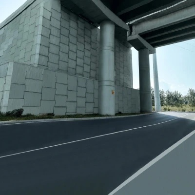

Retaining & Reinforced Soil Structures
Layers of soil reinforcement (geogrid or polymeric strips) tied to a modular facing let you build near-vertical retaining structures and steepened slopes without heavy RCC. Ideal for road widening, embankment ends, bridge approaches and level-difference sites.
- Reinforced soil walls with precast or block facing
- Reinforced soil slopes and steepened embankments
- Bridge abutments and approach ramps
- Design sections, drawings and stability checks